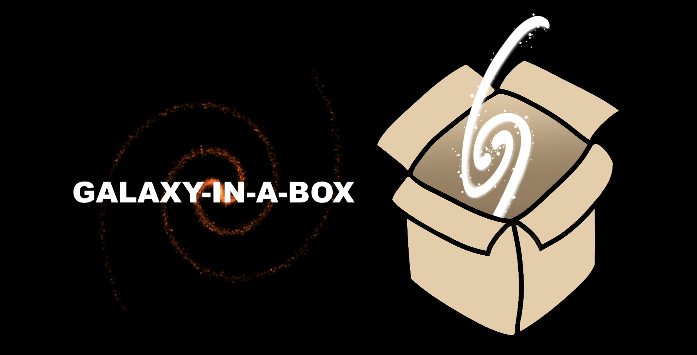

About

Hi! My name is Kasia [ˈkaɕa] Dutkowska (she/her), and currently, I'm a Ph.D. Fellow at the University of Copenhagen and expect to defend at the beginning of 2023. My research focuses on the following question: how do most stars in the Universe form? We know a lot about star formation and yet still lack a consensus on the most fundamental star formation properties. I've decided to approach this problem in a synergetic way by combining observations and modeling. This way, I can bridge Galactic and extragalactic star formation and find out (or at least do my best!) what rules govern star formation and if it happens in the same way everywhere in the Universe. If you want to learn more about it, check out my projects. And if you are interested in my education and experience, check out my cv.

Outside of research, I'm very devoted to my main hobby - photography. Before starting my scientific career, I had a little detour and studied filmmaking in London for a while. The artistic career didn't last, but my love for the arts did. I'm an amateur urban/street photographer. My works have been used in different places (album covers, articles, promo materials, etc.) and highlighted, e.g., by Samsung on their Instagram. Most of my current works can be found on my Instagram and Unsplash. Besides, I love reading, watching TV shows, curating playlists for different occasions (and, as such, listening to music extensively), and cooking. I'm also very dedicated to mindfulness practices and advocate for mental health wherever (and whenever) I can.
Projects
This page is a work in progres!

From observations of the local Universe, we know that most stars form in clusters, and with ALMA, we can now routinely trace molecular emission associated with active star formation at high redshift. The same emission is observed towards nearby well-resolved low-mass star- forming clusters. Thus, by utilizing and extrapolating our knowledge of these clusters, we open a way to understand how most stars form throughout the Universe and constrain global star formation parameters (e.g., star formation rate, star formation efficiency, or initial mass function). However, it requires a tool, working as a proxy, and because of that, I developed a galactic model of emission from massive young clusters, the so-called galaxy-in-a-box model. This model is the first of its kind, as it is a top-level observation-based astrophysical tool simulating molecular emission from the most active stages of star formation in galaxies. The model is available to the public, and in case you are interested in it or would like to collaborate, please contact me directly.
Water Emission Database

Over the past years, there have been many projects observing water emission towards Galactic and extragalactic regions. With the Water Emission Database I brought all of this data into one place creating a broad-view framework for astrochemical studies. For more information about this project, please visit the following website.
Orcid
|
NASA/ADS
Education and Employment
- [09/22-12/22] Research Assistant
Niels Bohr Institute, University of Copenhagen, Copenhagen, Denmark
- [09/19-12/22] Ph.D. fellow (in Astronomy/Astrophysics)
Niels Bohr Institute, University of Copenhagen, Copenhagen, Denmark
Thesis: Tracing star formation at high redshift using the Milky Way as a template
Supervisor: Lars Egstrøm Kristensen; Ph.D. expected at the beginning of 2023
- [10/17-08/19] M.Sc. (in Astronomy)
Nicolaus Copernicus University, Toruń, Poland
Thesis: Cluster-in-a-box: understanding how low-mass stars form in high-mass clusters using 338.4 GHz methanol emission as an outflow tracer
Advisor: Agata Karska, Co-advisor: Lars Egstrøm Kristensen; Defended on August 12th, 2019
- [10/14-07/17] B.Sc. (in Astronomy, Physics and Computer Usage)
Nicolaus Copernicus University, Toruń, Poland
Thesis: Searching for correlations between parameters of planetary nebulae and their central stars
Advisor: Krzysztof Gęsicki; Defended on July 27th, 2017
Awards and Honors
[2019] Scholarship of the Minister of Science and Higher Education for outstanding achievements. Awarded by the Ministry of Science and Higher Education of the Republic of Poland.
Science projects and proposals
- [09/19-12/22] Project: Unraveling the complex chemistry of star-forming regions
role: Ph.D. fellow and research assistant; PI: Dr. Lars E. Kristensen
- [03/21] Proposal: Unravelling low-mass protostars in a dense high-mass cluster
Scientific observations with Submillimeter Array in block 2021A
role: PI; cancelled due to COVID-19
- [01/18-09/18] Project: The impact of physical and chemical conditions on the star formation process: identification and characterization of young stellar objects in the Outer Galaxy
role: student research assistant; PI: Dr. Marta Sewiło
- [06/17-09/18] Project: Impact of the UV radiation on early star formation stages
role: student research assistant; PI: Dr. Agata Karska
Teaching experience
- [2021/2022] Co-advisor of a B.Sc. project
Project title: Mass Distributions of Stars and Clusters in Galaxies
University of Copenhagen
- [2021/2022] TA during a B.Sc. course
Course: Introduction to Computing for Physicists
University of Copenhagen [hybrid]
- [2020/2021] TA during a B.Sc. course
Course: Experimental Physics
University of Copenhagen [F2F]
- [2019/2020] TA during a M.Sc. course
Course: The Interstellar Medium and Formation of Stars
University of Copenhagen [online]
Talks
-
[2022] Annual Danish Astronomy Meeting, Fredericia, Denmark
Star formation through Cosmic history: from the perspective of a Milky Way inhabitant
-
[2022] StarPlan Science Day, Copenhagen, Denmark
Star formation: a Galactic view
-
[2021] StarPlan Science Day, Copenhagen, Denmark
What is in the box?
-
[2018] Astronomy Students' Associations Conference, Wrocław, Poland
Basics of astrochemistry
-
[2018] National Astronomy Students' Seminar, Toruń, Poland
Infrared and maser emission associated with low mass protostars
-
[2018] 48th Young European Radio Astronomers Conference, Dwingeloo, Netherlands
Infrared and 22 GHz water emission associated with a Sun-like protostar
-
[2018] Astronomy Students' Associations Conference, Kraków, Poland
Hawaiian observations
Posters
-
[2022] Niels Bohr Gold Medal Symposium in Astrochemistry, Copenhagen, Denmark
Star formation through cosmic history
Dutkowska, K. M. & Kristensen, L. E.
-
[2022] European Astronomical Society Annual Meeting, Valencia, Spain
Star formation through cosmic history: from the viewpoint of a Milky Way inhabitant
Dutkowska, K. M. & Kristensen, L. E.
-
[2022] Annual Danish Astronomy Meeting, Fredericia, Denmark
Modeling molecular emission to uncover the mass distribution of forming stars
Rashdan, O., Dutkowska, K. M. & Kristensen, L. E.
-
[2022] European Astronomical Society Annual Meeting, online conference
Galaxy-in-a-box: unveiling star formation across cosmic time
Dutkowska, K. M. & Kristensen, L. E.
-
[2021] Annual Danish Astronomy Meeting, online conference
Galaxy-in-a-box: linking Galactic and extragalactic star formation
Dutkowska, K. M. & Kristensen, L. E.
-
[2020] Physique et Chimie du Milieu Interstellaire, Le Havre, France
Linking Galactic and extragalactic star formation through water emission
Dutkowska, K. M., Kristensen, L. E. & Bergin, E. A.
-
[2018] XXXth General Assembly of the International Astronomical Union, Vienna, Austria
Strongly variable water maser associated with a Sun-like protostar
Dutkowska, K. M., Karska, A., Olech M., Wolak, P. & Gawroński, M.
-
[2018] Prebiotic Molecules in Space and Origins of Life on Earth, Bad Honnef, Germany
Peculiar H2O maser in a solar-type protostar L1448 IRS 2
Dutkowska, K. M., Karska, A., Olech M., Wolak, P. & Gawroński, M.
-
[2017] Astronomy Students' Associations Conference, Warsaw, Poland
Astrochemistry: then and now
Dutkowska, K. M. & Żółtowski, M.
Workshops and internships
-
[10/2022] Signatures of AGN Feedback: The Post-SOFIA Era
Online workshop
-
[07/2022] Ph.D. research exchange visit
Département de Physique de l'Ecole Normale supérieure, Paris, France
-
[06/2022] The Interstellar Shocks School
Les Houches, France
-
[06/2021] Virtual OPTICON Archival School using ESO and ALMA data
Online school
-
[03/2021] The Ultimate MySQL Bootcamp: Go from SQL Beginner to Expert
Online bootcamp
-
[03/2021] 2021 SMA Interferometry School
Online school
-
[12/2020] Scientific Writing in Astro
Online workshop
-
[03/2018] Student exchange visit
Research institutes in Munich - Garching, Germany
-
[07/2017] Summer student internship
Astronomical Observatory of the University of Wrocław, Białków, Poland
-
[06/2017] Python in science
Workshop; Toruń, Poland
Public outreach and promotion
-
[2022] Volunteer during the Niels Bohr Gold Medal Symposium in Astrochemistry; Copenhagen, Denmark
-
[2018] Volunteer during the XXXth General Assembly of the International Astronomical Union; Vienna, Austria
-
[2018] Popular science articles for the Polish daily newspaper Gazeta Wyborcza
-
[2014-2018] Volunteer during popular science public events
Practical skills
-
Native language
Polish
-
Other languages
English (fluent in reading, speaking, writing)
French (can read with dictionary)
-
Astronomical data processing environments
CASA, HIPE, CLASS, basic IRAF, and basic AIPS
-
Programming languages
Python, SQL, CSS, basic HTML, basic C, and basic C++
Publications
Water emission tracing active star formation from the Milky Way to high-z galaxies
Dutkowska, K. M. & Kristensen, L. E.
Status: in press
Journal: A&A
DOI: 10.1051/0004-6361/202243235
- Presentation of the galaxy-in-a-box model, a large-scale statistical model of emission from galactic active star-forming regions
- Parameter space study evaluating the impact of the most important global-star formation parameters on predicted emission from simulated galaxies
- Results for para-H2O 2_02-1_11 line at 988 GHz show that the initial mass function and molecular cloud mass distribution have a negligible impact on the emission, both locally and globally, whereas the opposite holds for star-formation efficiency and free-fall time efficiency
Star formation rate estimates from water emission
Dutkowska, K. M. & Kristensen, L. E.
Status: submitted
Journal: A&A
Physical origin of H2O emission in high-z galaxies
Kristensen, L. E., Dutkowska, K. M. & Bergin, E. A.
Status: submitted
Journal: A&A
Outreach publications
-
Dutkowska, K. M. When space-time bends (orig. Gdy czasoprzestrzeń się ugina). Gazeta Wyborcza. 2018.
-
Dutkowska, K. M. Where science meets practice - research with the use of an optical atomic clock (orig. Gdzie nauka spotyka praktykę, czyli badania z udziałem optycznego zegara atomowego). Gazeta Wyborcza. 2018.